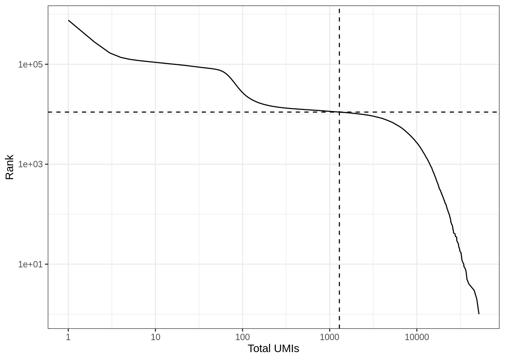
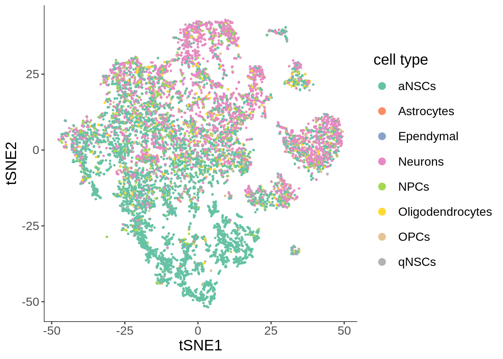
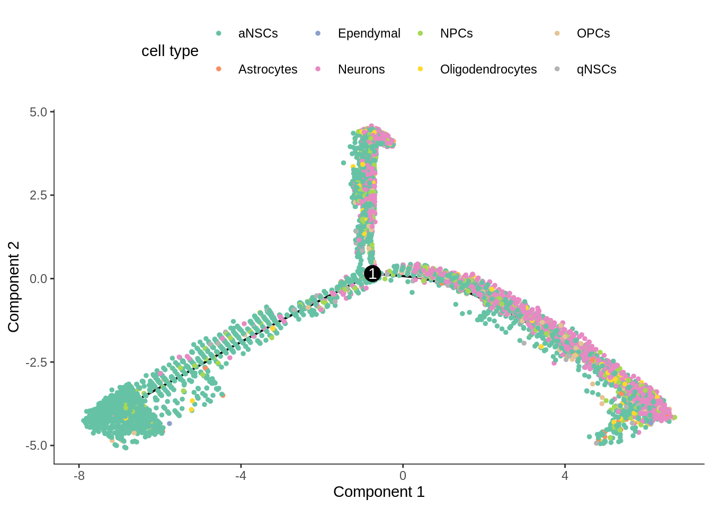
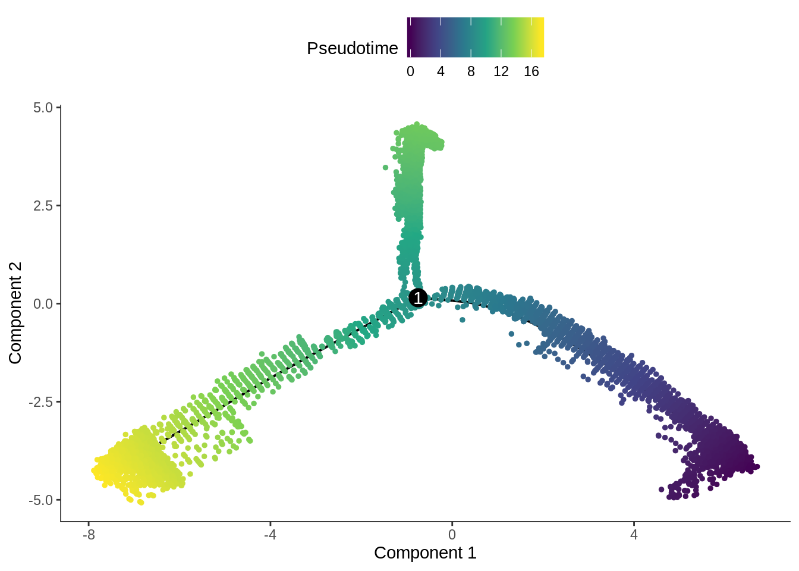

Pseudotime analysis with Monocle 2
Lambda Moses
2019-07-25
Last updated: 2019-07-25
Checks: 7 0
Knit directory: BUSpaRse_notebooks/
This reproducible R Markdown analysis was created with workflowr (version 1.4.0). The Checks tab describes the reproducibility checks that were applied when the results were created. The Past versions tab lists the development history.
Great! Since the R Markdown file has been committed to the Git repository, you know the exact version of the code that produced these results.
Great job! The global environment was empty. Objects defined in the global environment can affect the analysis in your R Markdown file in unknown ways. For reproduciblity it’s best to always run the code in an empty environment.
The command set.seed(20181214) was run prior to running the code in the R Markdown file. Setting a seed ensures that any results that rely on randomness, e.g. subsampling or permutations, are reproducible.
Great job! Recording the operating system, R version, and package versions is critical for reproducibility.
Nice! There were no cached chunks for this analysis, so you can be confident that you successfully produced the results during this run.
Great job! Using relative paths to the files within your workflowr project makes it easier to run your code on other machines.
Great! You are using Git for version control. Tracking code development and connecting the code version to the results is critical for reproducibility. The version displayed above was the version of the Git repository at the time these results were generated.
Note that you need to be careful to ensure that all relevant files for the analysis have been committed to Git prior to generating the results (you can use wflow_publish or wflow_git_commit). workflowr only checks the R Markdown file, but you know if there are other scripts or data files that it depends on. Below is the status of the Git repository when the results were generated:
Ignored files:
Ignored: .Rhistory
Ignored: .Rproj.user/
Ignored: BUSpaRse_notebooks.Rproj
Ignored: data/fastqs/
Ignored: data/hgmm_100_fastqs.tar
Ignored: data/hgmm_1k_fastqs.tar
Ignored: data/hgmm_1k_v3_fastqs.tar
Ignored: data/hgmm_1k_v3_fastqs/
Ignored: data/hs_cdna.fa.gz
Ignored: data/mm_cdna.fa.gz
Ignored: data/mm_cdna97.fa.gz
Ignored: data/neuron_10k_v3_fastqs.tar
Ignored: data/neuron_10k_v3_fastqs/
Ignored: data/retina/
Ignored: data/whitelist_v2.txt
Ignored: data/whitelist_v3.txt
Ignored: output/hs_mm_tr_index.idx
Ignored: output/mm_cDNA_introns_97_collapse.idx
Ignored: output/mm_tr_index.idx
Ignored: output/mm_tr_index97.idx
Ignored: output/out_hgmm1k/
Ignored: output/out_hgmm1k_v3/
Ignored: output/out_retina/
Untracked files:
Untracked: analysis/dropseq_retina.Rmd
Untracked: output/neuron10k/
Untracked: output/neuron10k_collapse/
Untracked: output/tr2g_mm97.tsv
Note that any generated files, e.g. HTML, png, CSS, etc., are not included in this status report because it is ok for generated content to have uncommitted changes.
These are the previous versions of the R Markdown and HTML files. If you’ve configured a remote Git repository (see ?wflow_git_remote), click on the hyperlinks in the table below to view them.
| File | Version | Author | Date | Message |
|---|---|---|---|---|
| Rmd | 4a9691a | Lambda Moses | 2019-07-26 | Reran with Ensembl 97 |
| html | 2da533f | Lambda Moses | 2019-07-17 | Build site. |
| Rmd | 6edf827 | Lambda Moses | 2019-07-17 | Just realized that one of the plots isn’t showing because of a typo |
| html | 62a20a3 | Lambda Moses | 2019-07-17 | Build site. |
| Rmd | 3cf75fe | Lambda Moses | 2019-07-17 | Added Monocle 2 notebook |
In this vignette, we will process fastq files of the 10x 10k neurons from an E18 mouse, and perform pseudotime analysis with Monocle 2 on the neuronal cell types. Monocle 2 is deprecated, but it can be easily installed from Bioconductor and still has a user base. At present, Monocle 3 is at beta stage of development, and it can be hard to install on Linux servers due to gdal dependency.
Setup
If you would like to rerun this notebook, you can git clone this repository or directly download this notebook from GitHub.
Install packages
This notebook demonstrates the use of command line tools kallisto and bustools. Please use kallisto >= 0.46, whose binary can be downloaded here. The binary of bustools can be found here.
After you download the binary, you should decompress the file (if it is tar.gz) with tar -xzvf file.tar.gz in the bash terminal, and add the directory containing the binary to PATH by export PATH=$PATH:/foo/bar, where /foo/bar is the directory of interest. Then you can directly invoke the binary on the command line as we will do in this notebook.
We will be using the R packages below. BUSpaRse is not yet on CRAN or Bioconductor. For Mac users, see the installation note for BUSpaRse. BUSpaRse will be used to generate the transcript to gene file for bustools and to read output of bustools into R. We will also use Seurat version 3 which is now on CRAN.
# Install devtools if it's not already installed
if (!require(devtools)) {
install.packages("devtools")
}
# Install from GitHub
devtools::install_github("BUStools/BUSpaRse")The package SingleR, which will be used for cell type inference, is only available on GitHub:
devtools::install_github("dviraran/SingleR")This vignette uses the version of DropletUtils from Bioconductor version 3.9; the version from Bioconductor 3.8 has a different user interface. If you are using a version of R older than 3.6.0 and want to rerun this vignette, then you can adapt the knee plot code to the older version of DropletUtils or install DropletUtils from GitHub. The package monocle should also be installed from Bioconductor:
if (!require(BiocManager)) {
install.packages("BiocManager")
}
BiocManager::install(c("DropletUtils", "monocle"))The other R packages below are on CRAN.
library(BUSpaRse)
library(DropletUtils)
library(monocle)
library(SingleR)
library(Matrix)
library(tidyverse)
theme_set(theme_bw())Download data
The dataset we are using is 10x 10k neurons from an E18 mouse (almost 25 GB).
# Download data
if (!file.exists("./data/neuron_10k_v3_fastqs.tar")) {
download.file("http://s3-us-west-2.amazonaws.com/10x.files/samples/cell-exp/3.0.0/neuron_10k_v3/neuron_10k_v3_fastqs.tar", "./data/neuron_10k_v3_fastqs.tar", method = "wget", quiet = TRUE)
}cd ./data
tar -xvf ./neuron_10k_v3_fastqs.tarGenerate the gene count matrix
Build the kallisto index
Here we use kallisto to pseudoalign the reads to the transcriptome and then to create the bus file to be converted to a sparse matrix. The first step is to build an index of the mouse transcriptome. The transcriptome downloaded here is Ensembl version 97, the most recent version as of writing.
# Mouse transcriptome
if (!file.exists("./data/mm_cdna97.fa.gz")) {
download.file("ftp://ftp.ensembl.org/pub/release-97/fasta/mus_musculus/cdna/Mus_musculus.GRCm38.cdna.all.fa.gz", "./data/mm_cdna97.fa.gz", method = "wget", quiet = TRUE)
}kallisto index -i ./output/mm_tr_index97.idx ./data/mm_cdna97.fa.gzWith the index and the fastq files, the kallisto bus command generates a binary bus file called output.bus, which will be sorted and processed to generate a gene count matrix.
cd ./data/neuron_10k_v3_fastqs
kallisto bus -i ../../output/mm_tr_index97.idx -o ../../output/neuron10k -x 10xv3 -t8 \
neuron_10k_v3_S1_L002_R1_001.fastq.gz neuron_10k_v3_S1_L002_R2_001.fastq.gz \
neuron_10k_v3_S1_L001_R1_001.fastq.gz neuron_10k_v3_S1_L001_R2_001.fastq.gzRun bustools
Map transcripts to genes
For the sparse matrix, most people are interested in how many UMIs per gene per cell, we here we will quantify this from the bus output, and to do so, we need to find which gene corresponds to each transcript. Remember in the output of kallisto bus, there’s the file transcripts.txt. Those are the transcripts in the transcriptome index.
Remember that we downloaded transcriptome FASTA file from Ensembl just now. In FASTA files, each entry is a sequence with a name. In Ensembl FASTA files, the sequence name has genome annotation of the corresponding sequence, so we can extract transcript IDs and corresponding gene IDs and gene names from there.
tr2g <- transcript2gene(fasta_file = "./data/mm_cdna97.fa.gz",
kallisto_out_path = "./output/neuron10k",
verbose = FALSE)head(tr2g)#> transcript gene gene_name
#> 1: ENSMUST00000196221.1 ENSMUSG00000096749.2 Trdd1
#> 2: ENSMUST00000179664.1 ENSMUSG00000096749.2 Trdd1
#> 3: ENSMUST00000177564.1 ENSMUSG00000096176.1 Trdd2
#> 4: ENSMUST00000178537.1 ENSMUSG00000095668.1 Trbd1
#> 5: ENSMUST00000178862.1 ENSMUSG00000094569.1 Trbd2
#> 6: ENSMUST00000179520.1 ENSMUSG00000094028.1 Ighd4-1bustools requires tr2g to be written into a tab delimited file of a specific format: No headers, first column is transcript ID, and second column is the corresponding gene ID. Transcript IDs must be in the same order as in the kallisto index.
# Write tr2g to format required by bustools
save_tr2g_bustools(tr2g, file_save = "./output/tr2g_mm97.tsv")A whitelist that contains all the barcodes known to be present in the kit is provided by 10x and comes with CellRanger. A CellRanger installation is required, though we will not run CellRanger here.
cp ~/cellranger-3.0.2/cellranger-cs/3.0.2/lib/python/cellranger/barcodes/3M-february-2018.txt.gz \
./data/whitelist_v3.txt.gz
gunzip ./data/whitelist_v3.txt.gzThen we’re ready to make the gene count matrix. First, bustools runs barcode error correction on the bus file. Then, the corrected bus file is sorted by barcode, UMI, and equivalence classes. Then the UMIs are counted and the counts are collapsed into gene level. Here the | is pipe in bash, just like the magrittr pipe %>% in R, that pipes the output of one command to the next.
mkdir ./tmp
bustools correct -w ./data/whitelist_v3.txt -p ./output/neuron10k/output.bus | \
bustools sort -T tmp/ -t4 -p - | \
bustools count -o ./output/neuron10k/genes -g ./output/tr2g_mm97.tsv \
-e ./output/neuron10k/matrix.ec -t ./output/neuron10k/transcripts.txt --genecounts -
rm -r ./tmpThe outputs are explained in the 10xv2 vignette.
Preprocessing
Now we can load the matrix into R for analysis.
res_mat <- read_count_output("./output/neuron10k", name = "genes", tcc = FALSE)Remove empty droplets
dim(res_mat)#> [1] 36558 1413171The number of genes seems reasonable. The number of barcodes is way larger than the expected ~10k.
tot_counts <- Matrix::colSums(res_mat)
summary(tot_counts)#> Min. 1st Qu. Median Mean 3rd Qu. Max.
#> 0.00 1.00 1.00 64.98 2.00 51636.00The vast majority of “cells” have only no or just a few UMI detected. Those are empty droplets. 10x claims to have cell capture rate of up to 65%, but in practice, depending on how many cells are in fact loaded, the rate can be much lower. A commonly used method to estimate the number of empty droplets is barcode ranking knee and inflection points, as those are often assumed to represent transition between two components of a distribution. While more sophisticated methods exist (e.g. see emptyDrops in DropletUtils), for simplicity, we will use the barcode ranking method here. However, whichever way we go, we don’t have the ground truth.
# Compute barcode rank
bc_rank <- barcodeRanks(res_mat, lower = 1000)Here the knee plot is transposed, because this is more generalizable to multi-modal data, such that those with not only RNA-seq but also abundance of cell surface markers. In that case, we can plot number of UMIs on the x axis, number of cell surface protein tags on the y axis, and barcode rank based on both UMI and protein tag counts on the z axis; it makes more sense to make barcode rank the dependent variable. See this blog post by Lior Pachter for a more detailed explanation.
tibble(total = bc_rank$total, rank = bc_rank$rank) %>%
distinct() %>%
ggplot(aes(total, rank)) +
geom_line() +
geom_vline(xintercept = metadata(bc_rank)$knee, color = "blue", linetype = 2) +
geom_vline(xintercept = metadata(bc_rank)$inflection, color = "green", linetype = 2) +
annotate("text", y = 1000, x = 1.5 * c(metadata(bc_rank)$knee, metadata(bc_rank)$inflection),
label = c("knee", "inflection"), color = c("blue", "green")) +
scale_x_log10() +
scale_y_log10() +
labs(y = "Barcode rank", x = "Total UMI count")#> Warning: Transformation introduced infinite values in continuous x-axis
| Version | Author | Date |
|---|---|---|
| 62a20a3 | Lambda Moses | 2019-07-17 |
# Remove genes that are not detected and empty droplets
res_mat <- res_mat[Matrix::rowSums(res_mat) > 0, tot_counts > metadata(bc_rank)$inflection]
dim(res_mat)#> [1] 23516 11037Now the number of cells is closer to expectation.
Cell type inference
Monocle 2 only infers one trajectory for the entire dataset, so non-neuronal cells like endothelial cells and erythrocytes may be mistaken as highly differentiated cells from the neuronal lineage. So we will remove cell types not of the neural or glial lineages. Cell types are also helpful to orient the trajectory; neuronal progenitor cells must come before neurons. Here cell type inference is done programatically with SingleR, which compares gene expression profiles of individual cells to bulk RNA-seq data of purified known cell types.
data("mouse.rnaseq")
# Convert from gene symbols to Ensembl gene ID
ref_use <- mouse.rnaseq$data
rownames(ref_use) <- tr2g$gene[match(rownames(ref_use), tr2g$gene_name)]
ref_use <- ref_use[!is.na(rownames(ref_use)),]Then SingleR will assign each cell a label based on Spearman correlation with known cell types from bulk RNA-seq. These are meanings of the acronyms:
- OPCs: Oligodendrocyte progenitor cells
- NPCs: Neural progenitor cells
- aNSCs: Active neural stem cells
- qNSCs: Quiescent neural stem cells
annots <- SingleR("single", res_mat, ref_data = ref_use, types = mouse.rnaseq$types)
inds <- annots$labels %in% c("NPCs", "Neurons", "OPCs", "Oligodendrocytes",
"qNSCs", "aNSCs", "Astrocytes", "Ependymal")
# Only keep these cell types
cells_use <- annots$cell.names[inds]
mat_neu <- res_mat[,cells_use]QC
df <- data.frame(nGene = Matrix::colSums(mat_neu > 0),
nUMIs = Matrix::colSums(mat_neu))df %>%
gather(key = "variable") %>%
ggplot(aes(variable, value)) +
geom_violin() +
geom_jitter(size = 0.1, alpha = 0.1, width = 0.3) +
scale_y_log10()
| Version | Author | Date |
|---|---|---|
| 62a20a3 | Lambda Moses | 2019-07-17 |
ggplot(df, aes(nUMIs, nGene)) +
geom_point(size = 0.5, alpha = 0.3) +
scale_x_log10() +
scale_y_log10()
| Version | Author | Date |
|---|---|---|
| 62a20a3 | Lambda Moses | 2019-07-17 |
Monocle 2
# Construct CellDataSet object
pd <- data.frame(cell_id = cells_use,
cell_type = annots$labels[inds],
row.names = cells_use)
pd <- new("AnnotatedDataFrame", data = pd)
fd <- data.frame(gene_id = rownames(mat_neu),
gene_short_name = tr2g$gene_name[match(rownames(mat_neu), tr2g$gene)],
row.names = row.names(mat_neu))
fd <- new("AnnotatedDataFrame", data = fd)
cds <- newCellDataSet(mat_neu, phenoData = pd, featureData = fd)Size factor and dispersion will be used to normalize data and select genes for clustering.
cds <- estimateSizeFactors(cds)
cds <- estimateDispersions(cds)#> Warning in log(ifelse(y == 0, 1, y/mu)): NaNs produced#> Warning: step size truncated due to divergence#> Warning in log(ifelse(y == 0, 1, y/mu)): NaNs produced#> Warning: step size truncated due to divergence#> Warning: glm.fit: algorithm did not converge#> Removing 106 outliersGenes that aren’t highly expressed enough will not be used for clustering, since they may not give meaningful signal and would only add noise.
disp_table <- dispersionTable(cds)
clustering_genes <- subset(disp_table, mean_expression >= 0.1)
cds <- setOrderingFilter(cds, clustering_genes$gene_id)cds <- reduceDimension(cds, num_dim = 40, reduction_method = 'tSNE')
cds <- clusterCells(cds, method = "louvain")
plot_cell_clusters(cds, cell_size = 0.5) +
theme(legend.position = "none") +
labs(x = "tSNE1", y = "tSNE2")
| Version | Author | Date |
|---|---|---|
| 62a20a3 | Lambda Moses | 2019-07-17 |
See where the annotated cell types are
plot_cell_clusters(cds, cell_size = 0.5, color_by = "cell_type") +
scale_color_brewer(name = "cell type", type = "qual", palette = "Set2") +
labs(x = "tSNE1", y = "tSNE2") +
theme(legend.position = "right") +
guides(color = guide_legend(override.aes = list(size = 3)))
| Version | Author | Date |
|---|---|---|
| 2da533f | Lambda Moses | 2019-07-17 |
Genes likely to be informative of ordering of cells along the pseudotime trajectory will be selected for pseudotime inference.
diff_genes <- differentialGeneTest(cds, fullModelFormulaStr = "~ Cluster + cell_type",
cores = 10)
# Use top 3000 differentially expressed genes
ordering_genes <- row.names(subset(diff_genes, qval < 1e-3))[order(diff_genes$qval)][1:3000]
cds <- setOrderingFilter(cds, ordering_genes)Here Monocle 2 will first project the data to 2 dimensions with DDRTree, and then do trajectory inference (orderCells).
cds <- reduceDimension(cds, max_components = 2, method = 'DDRTree')
cds <- orderCells(cds)See what the trajectory looks like. This projection is DDRTree.
plot_cell_trajectory(cds, color_by = "cell_type", cell_size = 1) +
scale_color_brewer(name = "cell type", type = "qual", palette = "Set2")
| Version | Author | Date |
|---|---|---|
| 62a20a3 | Lambda Moses | 2019-07-17 |
In the kallisto | bustools paper, I used slingshot for pseudotime analysis (Supplementary Figure 6.5) of this dataset, and found two neuronal end points. The result from Monocle 2 here also shows two main branches. Also, as expected, the stem cells are at the very beginning of the trajectory.
plot_cell_trajectory(cds, color_by = "Pseudotime", cell_size = 1) +
scale_color_viridis_c()
| Version | Author | Date |
|---|---|---|
| 62a20a3 | Lambda Moses | 2019-07-17 |
The pseudotime values are inverted.
cds <- orderCells(cds, reverse = TRUE)
plot_cell_trajectory(cds, color_by = "Pseudotime", cell_size = 1) +
scale_color_viridis_c()
| Version | Author | Date |
|---|---|---|
| 62a20a3 | Lambda Moses | 2019-07-17 |
Monocle 2 can also be used to find genes differentially expressed along the pseudotime trajectory and clusters of such genes. See David Tang’s excellent Monocle 2 tutorial for how to use these functionalities.
sessionInfo()#> R version 3.6.0 (2019-04-26)
#> Platform: x86_64-redhat-linux-gnu (64-bit)
#> Running under: CentOS Linux 7 (Core)
#>
#> Matrix products: default
#> BLAS/LAPACK: /usr/lib64/R/lib/libRblas.so
#>
#> locale:
#> [1] LC_CTYPE=en_US.UTF-8 LC_NUMERIC=C
#> [3] LC_TIME=en_US.UTF-8 LC_COLLATE=en_US.UTF-8
#> [5] LC_MONETARY=en_US.UTF-8 LC_MESSAGES=en_US.UTF-8
#> [7] LC_PAPER=en_US.UTF-8 LC_NAME=C
#> [9] LC_ADDRESS=C LC_TELEPHONE=C
#> [11] LC_MEASUREMENT=en_US.UTF-8 LC_IDENTIFICATION=C
#>
#> attached base packages:
#> [1] splines parallel stats4 stats graphics grDevices utils
#> [8] datasets methods base
#>
#> other attached packages:
#> [1] forcats_0.4.0 stringr_1.4.0
#> [3] dplyr_0.8.3 purrr_0.3.2
#> [5] readr_1.3.1 tidyr_0.8.3
#> [7] tibble_2.1.3 tidyverse_1.2.1
#> [9] SingleR_1.0.1 monocle_2.13.0
#> [11] DDRTree_0.1.5 irlba_2.3.3
#> [13] VGAM_1.1-1 ggplot2_3.2.0
#> [15] Matrix_1.2-17 DropletUtils_1.5.4
#> [17] SingleCellExperiment_1.7.0 SummarizedExperiment_1.15.5
#> [19] DelayedArray_0.11.4 BiocParallel_1.19.0
#> [21] matrixStats_0.54.0 Biobase_2.45.0
#> [23] GenomicRanges_1.37.14 GenomeInfoDb_1.21.1
#> [25] IRanges_2.19.10 S4Vectors_0.23.17
#> [27] BiocGenerics_0.31.5 BUSpaRse_0.99.19
#>
#> loaded via a namespace (and not attached):
#> [1] rappdirs_0.3.1 rtracklayer_1.45.2
#> [3] R.methodsS3_1.7.1 bit64_0.9-7
#> [5] knitr_1.23 R.utils_2.9.0
#> [7] data.table_1.12.2 RCurl_1.95-4.12
#> [9] AnnotationFilter_1.9.0 doParallel_1.0.14
#> [11] generics_0.0.2 metap_1.1
#> [13] GenomicFeatures_1.37.4 cowplot_1.0.0
#> [15] RSQLite_2.1.2 RANN_2.6.1
#> [17] combinat_0.0-8 proxy_0.4-23
#> [19] future_1.14.0 bit_1.1-14
#> [21] xml2_1.2.0 lubridate_1.7.4
#> [23] httpuv_1.5.1 assertthat_0.2.1
#> [25] viridis_0.5.1 xfun_0.8
#> [27] hms_0.5.0 evaluate_0.14
#> [29] promises_1.0.1 progress_1.2.2
#> [31] readxl_1.3.1 caTools_1.17.1.2
#> [33] dbplyr_1.4.2 igraph_1.2.4.1
#> [35] DBI_1.0.0 geneplotter_1.63.0
#> [37] htmlwidgets_1.3 sparsesvd_0.2
#> [39] backports_1.1.4 annotate_1.63.0
#> [41] gbRd_0.4-11 RcppParallel_4.4.3
#> [43] biomaRt_2.41.7 vctrs_0.2.0
#> [45] ensembldb_2.9.2 ROCR_1.0-7
#> [47] withr_2.1.2 BSgenome_1.53.0
#> [49] doFuture_0.8.1 sctransform_0.2.0
#> [51] GenomicAlignments_1.21.4 prettyunits_1.0.2
#> [53] cluster_2.1.0 ape_5.3
#> [55] lazyeval_0.2.2 crayon_1.3.4
#> [57] labeling_0.3 edgeR_3.27.9
#> [59] pkgconfig_2.0.2 slam_0.1-45
#> [61] nlme_3.1-140 ProtGenerics_1.17.2
#> [63] rlang_0.4.0 globals_0.12.4
#> [65] BiocFileCache_1.9.1 modelr_0.1.4
#> [67] rsvd_1.0.1 cellranger_1.1.0
#> [69] rprojroot_1.3-2 GSVA_1.33.1
#> [71] lmtest_0.9-37 graph_1.63.0
#> [73] singscore_1.5.0 Rhdf5lib_1.7.3
#> [75] zoo_1.8-6 whisker_0.3-2
#> [77] ggridges_0.5.1 pheatmap_1.0.12
#> [79] png_0.1-7 viridisLite_0.3.0
#> [81] bitops_1.0-6 R.oo_1.22.0
#> [83] KernSmooth_2.23-15 Biostrings_2.53.2
#> [85] blob_1.2.0 workflowr_1.4.0
#> [87] scales_1.0.0 memoise_1.1.0
#> [89] GSEABase_1.47.0 magrittr_1.5
#> [91] plyr_1.8.4 ica_1.0-2
#> [93] gplots_3.0.1.1 bibtex_0.4.2
#> [95] gdata_2.18.0 zlibbioc_1.31.0
#> [97] compiler_3.6.0 HSMMSingleCell_1.5.0
#> [99] lsei_1.2-0 dqrng_0.2.1
#> [101] RColorBrewer_1.1-2 fitdistrplus_1.0-14
#> [103] cli_1.1.0 Rsamtools_2.1.3
#> [105] XVector_0.25.0 listenv_0.7.0
#> [107] pbapply_1.4-1 MASS_7.3-51.4
#> [109] tidyselect_0.2.5 stringi_1.4.3
#> [111] densityClust_0.3 yaml_2.2.0
#> [113] askpass_1.1 locfit_1.5-9.1
#> [115] ggrepel_0.8.1 pbmcapply_1.5.0
#> [117] grid_3.6.0 tools_3.6.0
#> [119] future.apply_1.3.0 rstudioapi_0.10
#> [121] foreach_1.4.4 git2r_0.26.1
#> [123] outliers_0.14 gridExtra_2.3
#> [125] plyranges_1.5.12 Rtsne_0.15
#> [127] digest_0.6.20 FNN_1.1.3
#> [129] shiny_1.3.2 qlcMatrix_0.9.7
#> [131] Rcpp_1.0.2 broom_0.5.2
#> [133] SDMTools_1.1-221.1 later_0.8.0
#> [135] RcppAnnoy_0.0.12 httr_1.4.0
#> [137] AnnotationDbi_1.47.0 npsurv_0.4-0
#> [139] Rdpack_0.11-0 colorspace_1.4-1
#> [141] rvest_0.3.4 XML_3.98-1.20
#> [143] fs_1.3.1 reticulate_1.13
#> [145] shinythemes_1.1.2 plotly_4.9.0
#> [147] xtable_1.8-4 jsonlite_1.6
#> [149] zeallot_0.1.0 R6_2.4.0
#> [151] pillar_1.4.2 htmltools_0.3.6
#> [153] mime_0.7 glue_1.3.1
#> [155] codetools_0.2-16 tsne_0.1-3
#> [157] lattice_0.20-38 curl_4.0
#> [159] gtools_3.8.1 openssl_1.4.1
#> [161] survival_2.44-1.1 limma_3.41.15
#> [163] rmarkdown_1.14 docopt_0.6.1
#> [165] fastICA_1.2-2 munsell_0.5.0
#> [167] rhdf5_2.29.0 GenomeInfoDbData_1.2.1
#> [169] iterators_1.0.10 HDF5Array_1.13.4
#> [171] haven_2.1.1 reshape2_1.4.3
#> [173] gtable_0.3.0 Seurat_3.0.3.9016